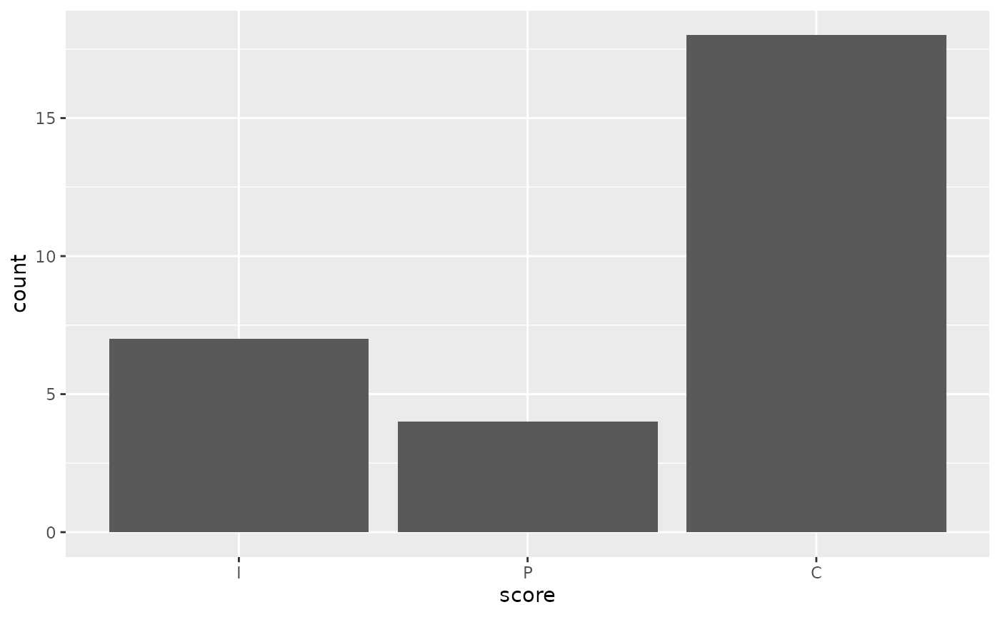
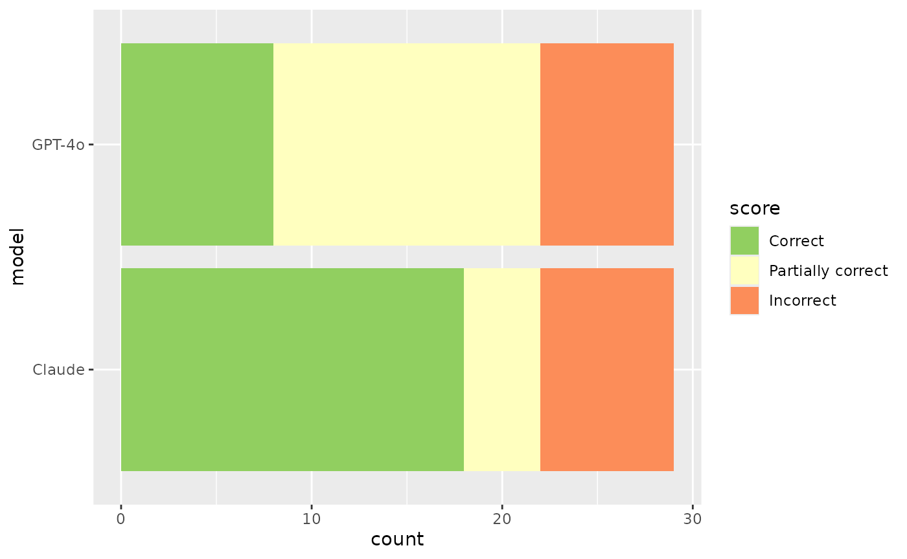

At their core, LLM evals are composed of three pieces:
-
Datasets contain a set of labelled samples.
Datasets are just a tibble with columns
inputandtarget, whereinputis a prompt andtargetis either literal value(s) or grading guidance. -
Solvers evaluate the
inputin the dataset and produce a final result (hopefully) approximatingtarget. In vitals, the simplest solver is just an ellmer chat (e.g.ellmer::chat_anthropic()) wrapped ingenerate(), i.e.generate(ellmer::chat_anthropic()), which will call the Chat object’s$chat()method and return whatever it returns. -
Scorers evaluate the final output of solvers. They
may use text comparisons, model grading, or other custom schemes to
determine how well the solver approximated the
targetbased on theinput.
This vignette will explore these three components using
are, an example dataset that ships with the package.
First, load the required packages:
An R eval dataset
From the are docs:
An R Eval is a dataset of challenging R coding problems. Each
inputis a question about R code which could be solved on first-read only by human experts and, with a chance to read documentation and run some code, by fluent data scientists. Solutions are intargetand enable a fluent data scientist to evaluate whether the solution deserves full, partial, or no credit.
glimpse(are)#> Rows: 26
#> Columns: 7
#> $ id <chr> "after-stat-bar-heights", "conditional-grouped-summary", "co…
#> $ input <chr> "This bar chart shows the count of different cuts of diamond…
#> $ target <chr> "Preferably: \n\n```\nggplot(data = diamonds) + \n geom_bar…
#> $ domain <chr> "Data analysis", "Data analysis", "Data analysis", "Programm…
#> $ task <chr> "New code", "New code", "New code", "Debugging", "New code",…
#> $ source <chr> "https://jrnold.github.io/r4ds-exercise-solutions/data-visua…
#> $ knowledge <list> "tidyverse", "tidyverse", "tidyverse", "r-lib", "tidyverse"…At a high level:
-
id: A unique identifier for the problem. -
input: The question to be answered. -
target: The solution, often with a description of notable features of a correct solution. -
domain,task, andknowledgeare pieces of metadata describing the kind of R coding challenge. -
source: Where the problem came from, as a URL. Many of these coding problems are adapted “from the wild” and include the kinds of context usually available to those answering questions.
For the purposes of actually carrying out the initial evaluation,
we’re specifically interested in the input and
target columns. Let’s print out the first entry in full so
you can get a taste of a typical problem in this dataset:
cat(are$input[1])#> This bar chart shows the count of different cuts of diamonds, and each
#> bar is stacked and filled according to clarity:
#>
#> ```
#> ggplot(data = diamonds) +
#> geom_bar(mapping = aes(x = cut, fill = clarity))
#> ```
#>
#> Could you change this code so that the proportion of diamonds with a
#> given cut corresponds to the bar height and not the count? Each bar
#> should still be filled according to clarity.Here’s the suggested solution:
cat(are$target[1])#> Preferably:
#>
#> ```
#> ggplot(data = diamonds) +
#> geom_bar(aes(x = cut, y = after_stat(count) / sum(after_stat(count)),
#> fill = clarity))
#> ```
#>
#> The dot-dot notation (`..count..`) was deprecated in ggplot2 3.4.0, but
#> it still works:
#>
#> ```
#> ggplot(data = diamonds) +
#> geom_bar(aes(x = cut, y = ..count.. / sum(..count..), fill = clarity))
#> ```
#>
#> Simply setting `position = "fill" will result in each bar having a
#> height of 1 and is not correct.Creating and evaluating a task
LLM evaluation with vitals happens in two main steps:
- Use
Task$new()to situate a dataset, solver, and scorer in aTask.
are_task <- Task$new(
dataset = are,
solver = generate(chat_anthropic(model = "claude-3-7-sonnet-latest")),
scorer = model_graded_qa(partial_credit = TRUE),
name = "An R Eval"
)
are_task- Use
Task$eval()to evaluate the solver, evaluate the scorer, and then explore a persistent log of the results in the interactive Inspect log viewer.
are_task$eval()After evaluation, the task contains information from the solving and scoring steps. Here’s what the model responded to that first question with:
cat(are_task$samples$result[1])#> # Converting a stacked bar chart from counts to proportions
#>
#> To change the bar heights from counts to proportions, you need to use
#> the `position = "fill"` argument in `geom_bar()`. This will normalize
#> each bar to represent proportions (with each bar having a total height
#> of 1), while maintaining the stacked clarity segments.
#>
#> Here's the modified code:
#>
#> ```r
#> ggplot(data = diamonds) +
#> geom_bar(mapping = aes(x = cut, fill = clarity), position = "fill") +
#> labs(y = "Proportion") # Updating y-axis label to reflect the change
#> ```
#>
#> This transformation:
#> - Maintains the stacking by clarity within each cut category
#> - Scales each bar to the same height (1.0)
#> - Shows the proportion of each clarity level within each cut
#> - Allows for easier comparison of clarity distributions across
#> different cuts
#>
#> The y-axis will now range from 0 to 1, representing the proportion
#> instead of raw counts.The task also contains score information from the scoring step. We’ve
used model_graded_qa() as our scorer, which uses another
model to evaluate the quality of our solver’s solutions against the
reference solutions in the target column.
model_graded_qa() is a model-graded scorer provided by the
package. This step compares Claude’s solutions against the reference
solutions in the target column, assigning a score to each
solution using another model. That score is either 1 or
0, though since we’ve set
partial_credit = TRUE, the model can also choose to allot
the response .5. vitals will use the same model that
generated the final response as the model to score solutions.
Hold up, though—we’re using an LLM to generate responses to questions, and then using the LLM to grade those responses?

This technique is called “model grading” or “LLM-as-a-judge.” Done correctly, model grading is an effective and scalable solution to scoring. That said, it’s not without its faults. Here’s what the grading model thought of the response:
cat(are_task$samples$scorer_chat[[1]]$last_turn()@text)
#> I need to assess whether the submission meets the criterion for
#> changing the bar chart to show proportions instead of counts.
#>
#> The submission suggests using `position = "fill"` in the `geom_bar()`
#> function. This approach would normalize each bar to have a total height
#> of 1, showing the proportion of different clarity levels within each
#> cut category.
#>
#> However, the criterion specifies a different approach. According to the
#> criterion, each bar should represent the proportion of diamonds with a
#> given cut relative to the total number of diamonds. This means using
#> either:
#> 1. `aes(x = cut, y = after_stat(count) / sum(after_stat(count)), fill =
#> clarity)` (preferred modern syntax)
#> 2. `aes(x = cut, y = ..count.. / sum(..count..), fill = clarity)`
#> (deprecated but functional syntax)
#>
#> The criterion explicitly states that using `position = "fill"` is not
#> correct because it would make each bar have a height of 1, rather than
#> showing the true proportion of each cut in the overall dataset.
#>
#> The submission is suggesting a different type of proportional
#> representation than what is being asked for in the criterion. The
#> submission shows the distribution of clarity within each cut, while the
#> criterion is asking for the proportion of each cut in the total
#> dataset.
#>
#> GRADE: IAnalyzing the results
Especially the first few times you run an eval, you’ll want to
inspect (ha!) its results closely. The vitals package ships with an app,
the Inspect log viewer, that allows you to drill down into the solutions
and grading decisions from each model for each sample. In the first
couple runs, you’ll likely find revisions you can make to your grading
guidance in target that align model responses with your
intent.
Under the hood, when you call task$eval(), results are
written to a .json file that the Inspect log viewer can
read. The Task object automatically launches the viewer when you call
task$eval() in an interactive session. You can also view
results any time with are_task$view(). You can explore this
eval above (on the package’s pkgdown site).
For a cursory analysis, we can start off by visualizing correct vs. partially correct vs. incorrect answers:
are_task_data <- vitals_bind(are_task)
are_task_data
#> # A tibble: 26 × 4
#> task id score metadata
#> <chr> <chr> <ord> <list>
#> 1 are_task after-stat-bar-heights I <tibble [1 × 10]>
#> 2 are_task conditional-grouped-summary P <tibble [1 × 10]>
#> 3 are_task correlated-delays-reasoning C <tibble [1 × 10]>
#> 4 are_task curl-http-get C <tibble [1 × 10]>
#> 5 are_task dropped-level-legend I <tibble [1 × 10]>
#> 6 are_task geocode-req-perform C <tibble [1 × 10]>
#> 7 are_task ggplot-breaks-feature I <tibble [1 × 10]>
#> 8 are_task grouped-filter-summarize P <tibble [1 × 10]>
#> 9 are_task grouped-mutate C <tibble [1 × 10]>
#> 10 are_task implement-nse-arg P <tibble [1 × 10]>
#> # ℹ 16 more rows
are_task_data %>%
ggplot() +
aes(x = score) +
geom_bar()
Claude answered fully correctly in 14 out of 26 samples, and partially correctly 6 times.For me, this leads to all sorts of questions:
- Are there any models that are cheaper than Claude that would do just as well? Or even a local model?
- Are there other models available that would do better out of the box?
- Would Claude do better if I allow it to “reason” briefly before answering?
- Would Claude do better if I gave it tools that’d allow it to peruse
documentation and/or run R code before answering? (See
btw::btw_register_tools()if you’re interested in this.)
These questions can be explored by evaluating Tasks against different
solvers and scorers. For example, to compare Claude’s performance with
OpenAI’s GPT-4o, we just need to clone the object and then run
$eval() with a different solver chat:
are_task_openai <- are_task$clone()
are_task_openai$eval(solver_chat = chat_openai(model = "gpt-4o"))Any arguments to solving or scoring functions can be passed directly
to $eval(), allowing for quickly evaluating tasks across
several parameterizations.
Using this data, we can quickly juxtapose those evaluation results:
are_task_eval <-
vitals_bind(are_task, are_task_openai) %>%
mutate(
task = if_else(task == "are_task", "Claude", "GPT-4o")
) %>%
rename(model = task)
are_task_eval %>%
mutate(
score = factor(
case_when(
score == "I" ~ "Incorrect",
score == "P" ~ "Partially correct",
score == "C" ~ "Correct"
),
levels = c("Incorrect", "Partially correct", "Correct"),
ordered = TRUE
)
) %>%
ggplot(aes(y = model, fill = score)) +
geom_bar() +
scale_fill_brewer(breaks = rev, palette = "RdYlGn")
Is this difference in performance just a result of noise, though? We can supply the scores to an ordinal regression model to answer this question.
library(ordinal)
#>
#> Attaching package: 'ordinal'
#> The following object is masked from 'package:dplyr':
#>
#> slice
are_mod <- clm(score ~ model, data = are_task_eval)
are_mod
#> formula: score ~ model
#> data: are_task_eval
#>
#> link threshold nobs logLik AIC niter max.grad cond.H
#> logit flexible 52 -54.80 115.61 4(0) 2.14e-12 1.2e+01
#>
#> Coefficients:
#> modelGPT-4o
#> -0.9725
#>
#> Threshold coefficients:
#> I|P P|C
#> -1.35956 -0.09041The coefficient for model == "GPT-4o" is -0.972,
indicating that GPT-4o tends to be associated with lower grades. If a
95% confidence interval for this coefficient contains zero, we can
conclude that there is not sufficient evidence to reject the null
hypothesis that the difference between GPT-4o and Claude’s performance
on this eval is zero at the 0.05 significance level.
confint(are_mod)
#> 2.5 % 97.5 %
#> modelGPT-4o -2.031694 0.04806051If we had evaluated this model across multiple epochs, the question
ID could become a “nuisance parameter” in a mixed model, e.g. with the
model structure
ordinal::clmm(score ~ model + (1|id), ...).
This vignette demonstrated the simplest possible evaluation based on
the are dataset. If you’re interested in carrying out more
advanced evals, check out the other vignettes in this package!